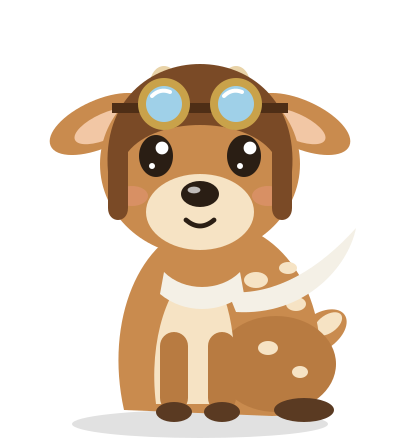

Под возраст детей
Анкета для любого количества детей от 3 до 11 лет: возраст и интересы каждого.
 Окно в прошлое
Окно в прошлое
Нижний Новгород · для семей с детьми
Откройте для себя персонализированные семейные маршруты по Нижнему Новгороду, вовлекающие вашего ребенка в процесс изучения города!
Возраст и интересы детей — один раз. Дальше только даты и места.
На один день или несколько: пешие пути по улицам города, время прибытия, где перекусить и найти туалет.
На точке старое фото ложится на камеру. Поймали ракурс — окно открыто: двигайте ползунок «тогда / сейчас» и читайте историю места.
Задания по возрасту, штампы и новые наряды эпох. Родителю — рассказ о месте, ребёнку — игра.
Анкета для любого количества детей от 3 до 11 лет: возраст и интересы каждого.
На карте — туалеты, еда, детские площадки, парки, скамейки и аптеки вдоль маршрута.
Ребёнок устал или пошёл дождь — помощник предложит, что убрать из маршрута, и найдёт место рядом.
Только снимки из архива PastVu, с автором и ссылкой. Ничего не нарисовано нейросетью.

Регистрация занимает минуту. Можно и без неё — поездка сохранится на сутки на этом телефоне.
Строим маршрут…
Карточки закончились
Ищем вас по GPS…
Совместите контур с тем, что видите
Двигай шторку — путешествуй во времени
Без входа поездка хранится сутки на этом телефоне. Войдёте позже — она перейдёт в аккаунт.
Демо-аккаунты
Отметьте для каждого — можно несколько. Подберём места так, чтобы скучно не было никому.
Загружаем…